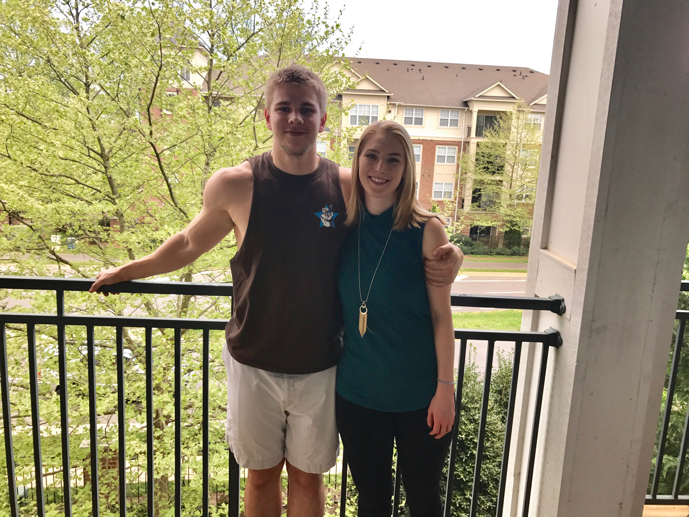

About Me
Hi, my name is Tom. I grew up in Lexington, VA and currently live in Fairfax, VA with my girlfriend, Liz. I went to college at UVA and graduated in May 2015 with a degree in civil engineering. I worked for two years as a civil engineer before deciding to change careers and pursue software engineering. I enrolled at George Mason University in the Applied Computer Science program and completed one semester before deciding that the pace was too slow and looked for alternatives. I found the George Washington University Coding Bootcamp and signed up as soon as possible. I am excited to learn cutting edge, job ready skills and be back in the work force so quickly.
Outside of coding, my two main hobbies are playing guitar and lifting weights. My mother owns a music store and my whole family plays music. I play mostly electric guitar and try to play as much as I can. I am also a National Academy of Sports Medicine Certified Personal Trainer and can squat 500+ lbs, deadlift 600+ lbs conventional, and bench press 300 lbs.